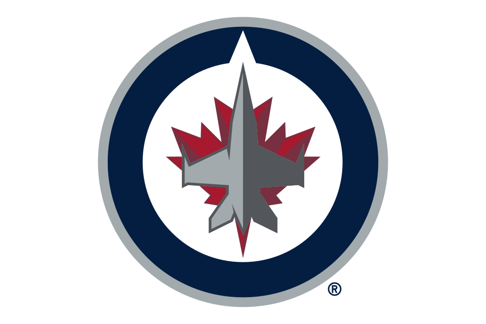

Ottawa Senators
Atlantic · Eastern Conference · 40 headlines in the last 30 days
Senators highlights
6 videos
 Senators vs. Lightning
Senators vs. Lightning
 Senators vs. Panthers
Senators vs. Panthers
 Flames vs. Senators
Flames vs. Senators
 Kings vs. Senators
Kings vs. Senators
 Flyers vs. Senators
Flyers vs. Senators
 Senators vs. Jets
Senators vs. JetsLatest Senators news
40 stories
Senators top Lightning 6-2 in historic win for Linus Ullmark
(AP) — Linus Ullmark stopped 18 shots, Michael Amadio had a goal and two assists and Tim Stutzle scored twice as the Ottawa Senators defeated the Tampa Bay Lightning 6-2 on Friday.Ullmark has allowed two-or-fewer goals in 13 of his 15 starts and improved to 13-2 on the season to become the first goaltender in NHL…

Senators Deliver Black Friday Beatdown In Tampa Bay, Extend Atlantic Division Lead
Tim Stützle scored twice and Michael Amadio had three points as the Senators crushed the Lightning 6-2, opening up a five-point lead atop the Atlantic Division.
Ottawa Senators Send Two Forwards Down To The Minors
Andre Burakovsky and Hayden Hodgson have been activated from injured reserve, with Burakovsky likely to make his return Friday afternoon in Tampa Bay.

Senators Face Lightning In Black Friday Battle Of Atlantic Powers
The Senators continue their four-game road trip with a rare Friday afternoon game in Tampa Bay.

Ranking The Seven Former Senators Goalies Who've Played In The NHL This Season
With questions about the goaltending depth behind Linus Ullmark, we look at seven familiar faces and how they're faring elsewhere in the NHL.

Atlantic Division Landscape Is Troublesome At Traditional Thanksgiving Checkpoint
Buffalo trails first-place Ottawa by nine points
Panthers Jump On The Senators, Ending Their Nine-Game Point Streak
Brad Marchand had three assists and Aleksander Barkov scored in their return to the Panthers' lineup, handing the Senators a 5-3 loss in Florida.


Brad Marchand Dishes Out 3 Assists, Sasha Barkov Scores As Both Make Splash In Return From Injury
Florida’s stars sparked an immediate offensive surge upon their return, combining veteran playmaking with clutch finishing to dismantle the Senators in Sunrise.

Marchand has 3 assists, Barkov scores in return and Panthers beat Senators 5-3
(AP) — Brad Marchand and Aleksander Barkov returned to the Florida lineup in style, with Marchand getting three assists and Barkov scoring an empty-netter to help the Panthers beat the Ottawa Senators 5-3 on Wednesday night.Anton Lundell, Sam Bennett, Niko Mikkola and Eetu Luostarinen also had goals for Florida, which…

Canucks Claim A Third Former Ottawa Senator Off Waivers
Cole Reinhardt joins Leevi Meriläinen and Cam Crotty in Vancouver as the Canucks continue to give former Senators new opportunities at the NHL level.


Paul Maurice On Senators: 'They'll Come Into This Game Expecting To Beat Us"
The Panthers head coach has plenty of respect for the Atlantic-leading Senators, who face Brady Tkachuk for the second time Wednesday night as Florida welcomes back two of its biggest stars.
Aleksander Barkov, Brad Marchand Will Return To Florida Panthers Lineup Wednesday Against Ottawa
After two months on the shelf with knee injuries, Florida’s star forwards rejoin a deep offensive group as the Panthers look to spark their season against Ottawa.

Senators Send Carter Yakemchuk To Belleville, Recall 6-Foot-7 Defenceman
After dressing for just two of the Senators' last 12 games, Carter Yakemchuk is headed to Belleville, while towering defenceman Djibril Touré gets his first NHL call-up.


Ullmark's 34-save outing powers Senators to a 2-1 win over the Flames
OTTAWA, Ontario (AP) — Linus Ullmark made 34 saves to lead the Ottawa Senators to a 2-1 victory over the Calgary Flames on Monday night.Michael Amadio and Shane Pinto scored as Ottawa (16-6-3) closed out its three-game homestand with a 2-0-1 record.

Ullmark Shines Again As Senators Defeat Flames, Extend Atlantic Division Lead
Linus Ullmark came within five minutes of his first shutout of the season as the Senators extended their Atlantic Division lead to three points with a 2-1 victory over Calgary.

Flames Fall to Senators to Open Five-Game Road Trip
The Calgary Flames opened their five-game road trip in Ottawa on Monday night, coming up short against the Senators in a 2-1 loss.


Flames Open Five-Game Road Trip Against Surging Senators
The Calgary Flames open a five-game road trip Monday night with a stop in Canada’s capital to take on a surging Ottawa Senators team.

LINE COMBINATIONS: Senators Aren't Changing A Thing As They Defend First Place
The Senators make no changes after Saturday's victory over Los Angeles, while another former Ottawa 67's captain returns to town.
Larkin Trade To Montreal Sends Shockwaves Through Senators' Division
The Senators have climbed into first place in the Atlantic, but Montreal's blockbuster acquisition of Dylan Larkin could make staying there a whole lot tougher.
NHL Trade Rumors: Will Ottawa be a spot for Penguin veterans?
The Penguins had a visitor on Saturday night. Ottawa Senators general manager Steve Staios was in the house in Nashville to take in Pittsburgh’s game against the Predators. As The Athletic put it: Staios was very clearly in Nashville to get an in-person look at some of the Penguins’ veterans. It’s no secret that many…
Kings Choke Away Another Game in Third-Period Collapse Against Senators
Tim Stützle’s third-period blitz silenced Los Angeles as defensive breakdowns erased an early lead, leaving the struggling Kings reeling from yet another late-game meltdown in Ottawa.

Ottawa GM Scouts Predators' Game Against Penguins
As initially reported by Nick Kieser, Ottawa Senators general manager Steve Staios was in attendance for last night's matchup between the Nashville Predators and Pittsburgh Penguins.


Brian Dumoulin Fined For Cross-Check To Jordan Spence's Head, But Only Spence Got The Penalty
The NHL fined the Los Angeles Kings the maximum allowable amount for his cross-check on Saturday night, but the Senators were the ones who ended up shorthanded.

Four Reasons Why Sidney Crosby Isn't Coming To The Senators
Drake Batherson joked that he would be willing to give Sidney Crosby his house if the Penguins superstar came to the Senators. It's a fun thought, an exciting idea, but there are some pretty big obstacles in the way.

Ottawa Senators' GM Scouts Saturday's Game Between Penguins, Predators
The Senators are rumored to be interested in a few Penguins' veterans.

Stutzle's 2 goals in the 3rd period help power the Senators to a 4-2 win over the Kings
OTTAWA, Ontario (AP) — Tim Stutzle had a three-point game that included a pair of goals in the third period, leading the Ottawa Senators to a 4-2 win over the Los Angeles Kings on Saturday night.Linus Ullmark made 19 saves in the win.
Senators Take Sole Possession Of First In Atlantic Division With 4-2 Win Over Kings
Tim Stützle scored twice and added an assist, Nick Cousins made an immediate impact in his return, and the Senators bounced back from Thursday's loss to Philadelphia.

"I'm All For Those Kind Of Hits": Nick Cousins Returns To Senators Lineup After Devastating Chychrun Hit
Nick Cousins has no hard feelings toward former teammate Jakob Chychrun after a massive hit knocked him unconscious.

Senators Host Kings Saturday After Another Wild Comeback, Another 6-5 Overtime Loss
The Senators will try and put Thursday's third period meltdown behind them.

Sens Nation Podcast: The Return Of Backup Goalie Concerns; Boucher Makes NHL Debut
On this episode of the Sens Nation Podcast, Samuel Ersson gets shelled by his former team, Tyler Boucher's NHL debut, and playing Grand Theft Audio V apparently led to Craig Anderson's worst season in Ottawa.